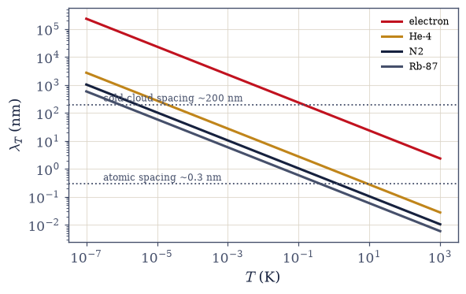
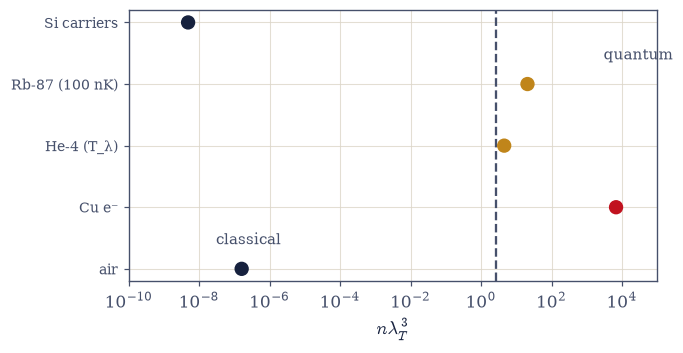
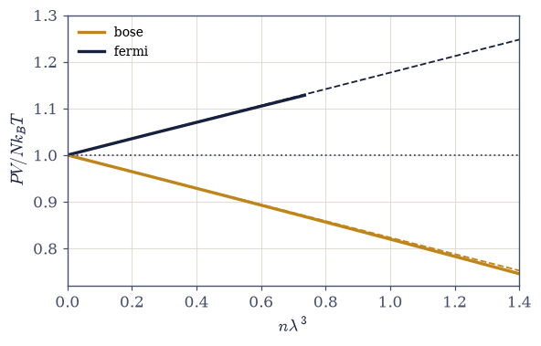
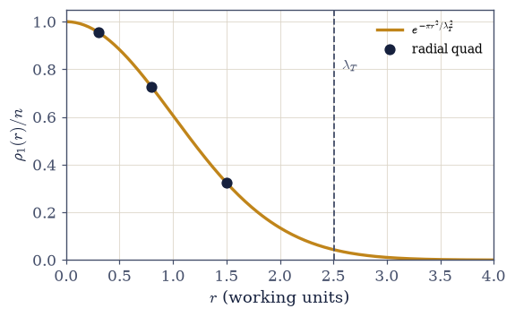
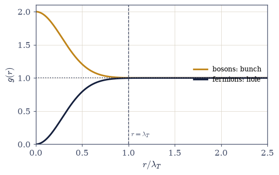

7.8 The Classical Limit and the Thermal Wavelength: The N! Derived#
Notebook overview#
Movement II’s first notebook derived the quantum distributions; this one asks where the classical world lives, and answers with a single length. In the dilute limit \(z \ll 1\) both of the gases of §7.7 collapse onto \(\ln\Xi = zZ_1\), and the single-particle sum evaluates to \(Z_1 = V/\lambda_T^3\) with
the thermal de Broglie wavelength — the size of a particle’s thermal wavepacket. Quantum statistics matters when wavepackets overlap, and the criterion \(n\lambda_T^3 \sim 1\) turns out to be the volume’s road map: one dimensionless number, computed honestly in SI for five systems, sorts air (never quantum, \(10^{-7}\)) from copper’s electrons (never classical, \(10^{3}\) — the mandate of Movement III, which begins next door) from liquid helium at its lambda point (just past the condensation threshold, and superfluid on schedule) from an engineered ultracold cloud from the Boltzmann-licensed carriers of a semiconductor (the permission slip of §7.13).
The centerpiece completes an arc the volume has been building for three notebooks. Expanding \(\Xi = e^{zZ_1}\) and reading off the canonical \(Z_N = Z_1^N/N!\), the Gibbs factor falls out — not bolted on to fix a paradox, but inevitable, because occupation-number states never carried particle labels in the first place (§6.20 answering the question §5.1/§5.6 raised). With it comes Sackur–Tetrode, and the notebook’s jewel: argon’s standard molar entropy, computed from \(h\), \(k_B\), and a mass, reproduces the measured \(154.85\) J mol⁻¹K⁻¹ to every displayed digit — a room-temperature calorimetric number that contains Planck’s constant. The arc of derived conventions is complete: \(h\) (§7.5), \(\sigma\) (§7.6), \(N!\) (here).
The rest of the notebook measures what “almost classical” means. In the equation of state, the exact quantum EOS (the polylogarithms of §7.3) yields the pure-statistics virial \(PV/Nk_BT = 1 \mp n\lambda^3/2^{5/2}\): bosons reduce the pressure and fermions raise it, an attraction and a repulsion with no force anywhere — bunching’s thermodynamic face, and the embryo of the degeneracy pressure that opens §7.9. And in real space, the one-body density matrix is verified to be a Gaussian of width exactly \(\lambda_T\) (the wavepacket is not a metaphor: \(\lambda_T\) is the coherence length), so the dilute pair correlation \(g(r) = 1 \pm e^{-2\pi r^2/\lambda_T^2}\) carries the exchange effects at range \(\lambda_T\): a bunching peak \(g(0) = 2\) for bosons, an exchange hole \(g(0) = 0\) for fermions. An exact two-particle computation in a box certifies both honestly — the fermionic coincidence amplitude vanishes identically at any size (antisymmetry needs no thermodynamic limit), while the bosonic enhancement reads \(1.77\) at \(N = 2\) and trends to the ideal \(2\), with the finite-size sources named rather than hidden.
Conventions (this notebook). Structural checks run in working units \(\hbar = m = k_B = 1\) (where \(\lambda_T = \sqrt{2\pi\beta}\)); everything that touches a real substance — the degeneracy table, Sackur–Tetrode — runs in full SI with CODATA constants in Setup. The virial slopes are extracted at small fugacity (\(z \le 0.05\)) and shown converging, with one deliberately contaminated fit at large \(z\) for contrast. Truncations and mode counts are stated; the two-particle box sums keep the \(n = m\) diagonal for bosons and exclude it for fermions — the off-by-one that silently breaks both answers.
How to read the checks. Each exercise closes with a
validatecall against an independent fact: \(Z_1 = V/\lambda_T^3\) against the density-of-states integral to eight digits; the degeneracy table against its verified values across eleven decades; zero mixing entropy with the \(N!\) (and \(2Nk_B\ln2\) without); argon’s \(154.85\) against the third-law calorimetric value; the virial slopes converging to \(\mp1/2^{5/2}\); the \(\rho_1\) Gaussian to six digits; and the exact box certification of the exchange hole and the bunching factor. A ✓ is strong evidence; a ✗ is a prompt to locate the discrepancy.Scope. The classical boundary of the quantum gases, and the fingerprints that survive inside it. Degeneracy pressure grown up is §7.9; the banded solids are §7.12/§7.13; \(\mu = 0\) light is §7.14; the criterion becoming a phase boundary (\(n\lambda^3 = \zeta(3/2)\)) is §7.17; the ring polymer whose size is this notebook’s \(\lambda_T\) is §7.20/§7.21. See Pathria & Beale (Chs. 5–7); Kardar, Statistical Physics of Particles (Ch. 7); Kittel & Kroemer (the Sackur–Tetrode test); Huang (the quantum virial). Cross-reference §5.1/§5.6 (the counting and the inserted \(N!\)), §5.3 (Stirling), §6.20 (indistinguishability, put to work), §7.3 (the DOS and polylogarithms), §7.5/§7.6 (the arc’s first entries), §7.7 (the distributions).
Theory in brief#
The dilute limit and the thermal wavelength#
Start from the exact expression of §7.7, \(\ln\Xi = \mp\sum_i\ln(1 \mp ze^{-\beta\varepsilon_i})\) and let \(z \ll 1\): the logarithms linearize and both statistics collapse onto \(\ln\Xi \to z\sum_i e^{-\beta \varepsilon_i} = zZ_1\). The single-particle sum is a Gaussian momentum integral (the density of states of §7.3 doing the counting):
\(\lambda_T\) is the de Broglie wavelength of a particle carrying thermal momentum, with the honest \(\sqrt{2\pi}\) bookkeeping the Gaussian integral supplies — the size of the thermal wavepacket, and Exercise 6 will show that reading is exact, not rhetorical. The scalings carry the physics: \(\lambda_T \propto 1/\sqrt{mT}\), so light and cold is quantum.
The degeneracy criterion: one number sorts matter#
Quantum statistics matters when wavepackets overlap — when the volume per particle is comparable to the coherence volume:
One table, computed in SI, sorts everything this volume will touch: air at \(\sim10^{-7}\) (never quantum); copper’s conduction electrons at \(\sim7\times10^{3}\) (never classical — the electron’s tiny mass, and Movement III’s mandate); liquid helium-4 at its lambda point at \(4.5\), just past the condensation threshold \(\zeta(3/2) = 2.612\) — superfluidity arriving where the ideal-gas criterion says it should (an honest caveat: helium is strongly interacting, and the semiquantitative agreement is the remarkable part); an ultracold rubidium cloud at \(\sim21\) (degeneracy engineered — the laboratories of §7.17); and silicon’s intrinsic carriers at \(\sim5\times10^{-9}\) (Boltzmann statistics licensed, which is exactly why the semiconductor carriers of §7.13 may be treated classically until doping says otherwise).
The N! falls out: Gibbs derived#
In the dilute limit \(\Xi = e^{zZ_1}\); expand and match against the definition \(\Xi = \sum_N z^N Z_N\):
The Gibbs factor is derived, not imposed. Volume V had to divide by \(N!\) by hand (§5.6) because its phase-space integral counted each physical configuration \(N!\) times, once per particle labelling; occupation-number states (§7.7) never labelled particles, so the overcounting never occurs and the factorial arrives already in place. The Gibbs paradox dissolves with it: without the \(N!\), entropy is non-extensive and “mixing” two samples of the same gas creates \(2Nk_B\ln2\) of entropy from nothing; with it, zero, as it must. The arc closes: \(h\) (§7.5), \(\sigma\) (§7.6), \(N!\) (here) — every fudge factor in the classical formalism was a quantum limit.
Sackur–Tetrode against the laboratory#
From \(Z_N = (V/\lambda_T^3)^N/N!\), the free energy and Stirling (§5.3) give the absolute entropy of a monatomic ideal gas,
extensive at last, and absolute — no undetermined constant, because \(\lambda_T\) carries \(h\). The test against data is the notebook’s jewel: argon at \(298.15\) K and \(1\) bar gives \(154.85\) J mol⁻¹K⁻¹ against the measured standard molar entropy \(154.85\) — a third-law calorimetric number, assembled by integrating \(C_p\,dT/T\) from near absolute zero through two phase transitions, agreeing to every displayed digit with a formula containing \(\hbar\). Classical thermodynamics can only ever measure entropy differences; the absolute scale exists because phase space is cellular, with cell size \(h\) — Planck’s constant, readable in a nineteenth-century-style measurement.
Statistics as pressure: the pure-statistics virial#
The exact ideal quantum EOS, in the parametric form the functions of §7.3 provide,
with upper signs bosonic. The correction is a second virial coefficient of pure statistics, \(B_2 = \mp\lambda^3/2^{5/2}\): with no interaction anywhere, bosons exert less pressure than a classical gas at the same density (a statistical attraction — bunching’s thermodynamic face, and the shadow of the condensation of §7.17) and fermions more (a statistical repulsion — the embryo of the degeneracy pressure that will hold up white dwarfs in §7.11). Exercise 5 extracts the coefficient from the exact EOS and watches it converge to \(\mp1/2^{5/2} = \mp0.17678\).
Exchange in real space: the range of the statistical force#
The one-body density matrix (the spatial coherence of a single thermal particle) is the Fourier transform of the occupation:
the first verified to six digits by the radial transform (a Gaussian of width exactly \(\lambda_T\): the coherence length, and the degeneracy criterion is literally “coherence volumes overlapping”), the second the dilute pair correlation. Bosons bunch: \(g(0) = 2\), the factor of two of thermal light — the geometric variance of §7.5 and the \(n(1+n)\) of §7.7, landed in real space (Hanbury Brown–Twiss, by name). Fermions dig an exchange hole: \(g(0) = 0\), Pauli in space, ancestor of the exchange–correlation holes of electronic-structure theory (a horizon nodding toward §7.12 and the MMM course). An exact two-particle computation in a box certifies both: the antisymmetrized coincidence amplitude vanishes identically — at any size, any temperature — while the symmetrized enhancement reads \(1.77\) at \(N = 2\) and approaches the ideal \(2\) only as the box grows, the finite-size bookkeeping taught as such. The statistical “interaction” has a range, and the range is \(\lambda_T\).
Where the movements go from here#
The classical world is the regime \(n\lambda^3 \ll 1\): too dilute, too heavy, too hot for wavepackets to touch. Three roads leave it. Dense and light — electrons in metals and dead stars — is Movement III, beginning immediately (§7.9). Cold (helium and the engineered condensates) is Movement IV (§7.17). Massless (light, for which \(\mu = 0\) and no classical regime ever existed) is the photon gas (§7.14). The criterion is the volume’s road map.
Setup#
import matplotlib.pyplot as plt
import mpmath
import numpy as np
from scipy.integrate import quad
from scipy.special import zeta
from ecp import draw, validate
ACCENT, INK, SOFT = draw.ACCENT, draw.INK, draw.SOFT
RED = "#c1121f"
# Conventions. Structural checks: working units ħ = m = k_B = 1, where
# λ_T = √(2πβ). Real substances: full SI, CODATA-2018 constants below, no premature
# rounding (the Sackur–Tetrode match to every displayed digit needs the digits).
# Truncations and mode counts stated at point of use; the two-particle box sums keep
# the n = m diagonal for bosons and exclude it for fermions.
from scipy.constants import h as H_PLANCK # J s (exact, SI 2019)
from scipy.constants import k as K_B # J/K (exact)
from scipy.constants import N_A as N_AVOGADRO # 1/mol (exact)
R_GAS = N_AVOGADRO * K_B # J/(mol K) = 8.31446...
from scipy.constants import m_u as U_AMU # atomic mass constant, kg
from scipy.constants import m_e as M_ELECTRON # kg
def lambda_T(m, T):
"""The thermal de Broglie wavelength λ_T = h/√(2π m k_B T) in SI (eq-thermal-wavelength).
The size of a thermal wavepacket: the de Broglie wavelength at thermal momentum,
with the √(2π) the Gaussian momentum integral supplies (not a convention — the
factor that makes Z_1 = V/λ^3 exact). Scalings: ∝ 1/√(mT) — light and cold is
quantum. All CODATA constants, no rounding.
Parameters
----------
m : float
Particle mass in kg.
T : float
Temperature in K.
Returns
-------
float
λ_T in metres.
"""
return H_PLANCK / np.sqrt(2.0 * np.pi * m * K_B * T)
def degeneracy(n, m, T):
"""The degeneracy parameter n λ_T^3 — the one number that sorts matter (eq-degeneracy-criterion).
The number of particles per coherence volume: << 1 means wavepackets never touch
(classical), ~ 1 means quantum statistics governs, with the Bose condensation
threshold sitting at ζ(3/2) = 2.612 (§7.17). Exercise 2's table runs this across
eleven decades of real matter.
Parameters
----------
n : float
Number density in 1/m^3.
m : float
Particle mass in kg.
T : float
Temperature in K.
Returns
-------
float
The dimensionless n λ_T^3.
"""
return n * lambda_T(m, T) ** 3
def sackur_tetrode(m, T, P):
"""The Sackur–Tetrode molar entropy S = R[ln(k_B T/(P λ_T^3)) + 5/2] (eq-sackur-tetrode).
The absolute entropy of a monatomic ideal gas: extensive (the derived N! at work)
and ℏ-bearing (the λ_T^3 cell in phase space). Precision note: the match to
argon's measured 154.85 J/(mol K) is exact to the displayed digits only if the
constants carry full CODATA precision end to end — premature rounding of λ_T
moves the second decimal.
Parameters
----------
m : float
Atomic mass in kg.
T : float
Temperature in K.
P : float
Pressure in Pa.
Returns
-------
float
Molar entropy in J/(mol K).
"""
v = K_B * T / P # volume per particle
return R_GAS * (np.log(v / lambda_T(m, T) ** 3) + 2.5)
def quantum_eos(z, statistics):
"""The exact ideal quantum EOS, parametric in fugacity (eq-statistics-virial).
Returns (nλ^3, Pλ^3/k_BT) = (±Li_(3/2)(±z), ±Li_(5/2)(±z)) via mpmath.polylog —
the functions of §7.3 carrying the whole equation of state. Upper signs bosons (z < 1
required: the fugacity ceiling of §7.7), lower signs fermions (any z > 0).
Parameters
----------
z : float
The fugacity.
statistics : str
'bose' or 'fermi'.
Returns
-------
tuple of float
(n λ^3, P λ^3 / k_B T).
"""
z = float(z) # mpmath returns a complex mpc for numpy.float64 inputs — cast first
if statistics == "bose":
return float(mpmath.polylog(1.5, z)), float(mpmath.polylog(2.5, z))
if statistics == "fermi":
return -float(mpmath.re(mpmath.polylog(1.5, -z))), -float(
mpmath.re(mpmath.polylog(2.5, -z))
)
raise ValueError("statistics must be 'bose' or 'fermi'")
def two_particle_R(beta, L, n_levels):
"""The integrated boson coincidence enhancement for two thermal particles in a 1D box.
Explicit symmetrized pair sums over numpy.arange box modes (φ_n = √(2/L) sin(nπx/L),
E_n = n^2 π^2/2L^2, working units): the coincidence density ρ_2(x, x), integrated
over the box, for the symmetric two-boson thermal state versus two distinguishable
(Boltzmann) particles at the same temperature. The n = m diagonal is INCLUDED for
bosons (excluding it is the classic off-by-one), and the algebra collapses to
R = 2W^2/(W^2 + W_2) with W = Σ e^(−βE_n), W_2 = Σ e^(−2βE_n): the enhancement is
2 in the thermodynamic limit (W_2/W^2 → 0) and visibly below it in a small box.
Parameters
----------
beta : float
Inverse temperature (working units).
L : float
Box length.
n_levels : int
Number of box modes summed (state ≫ thermal cutoff L√(2/β)/π).
Returns
-------
float
The integrated enhancement R = ∫ρ_2^{bose}/∫ρ_2^{dist}.
"""
n_idx = np.arange(1, n_levels + 1, dtype=float)
E_n = n_idx**2 * np.pi**2 / (2.0 * L**2)
w = np.exp(-beta * E_n)
W, W2 = float(w.sum()), float((w**2).sum())
return 2.0 * W**2 / (W**2 + W2)
Exercise 1 — One length from the dilute limit#
Both quantum gases collapse onto a single-particle sum, and the sum defines the volume’s most important length. Cite Eq. 611.
Show \(\ln\Xi \to zZ_1\) for \(z \ll 1\) from the expression of §7.7, \(\ln\Xi = \mp\sum\ln(1 \mp ze^{-\beta \varepsilon})\).
Evaluate \(Z_1 = V/\lambda_T^3\) by the Gaussian momentum integral, defining \(\lambda_T = h/\sqrt{2\pi mk_BT}\).
Verify against the density-of-states integral of §7.3 with
scipy.integrate.quadto at least eight digits (working units).Tabulate \(\lambda_T\) for an electron, He-4, N₂, and Rb-87 at their relevant temperatures, and state the scaling moral: light and cold is quantum. (Computation + one prose sentence.)
Z_1/V by the DOS integral (quad): 1.084134431132e-01
1/λ_T^3 with λ_T = √(2πβ): 1.084134431132e-01
thermal wavelengths:
electron, 300 K λ_T = 4.3035 nm
He-4, 2.17 K λ_T = 0.5924 nm
N2, 300 K λ_T = 0.0190 nm
Rb-87, 100 nK λ_T = 592.1982 nm

Fig. 557 The thermal de Broglie wavelength \(\lambda_T = h/\sqrt{2\pi mk_BT}\) across eight decades of temperature for four species (log–log axes: every line has slope \(-\tfrac12\), the \(1/\sqrt{T}\) law, and the species order is pure \(1/\sqrt{m}\)). The electron’s wavepacket is nanometre-scale at room temperature — bigger than an atom, which is why metals can never be classical — while nitrogen’s is picometre-scale, far below its own size. The reference bars mark an atomic spacing (0.3 nm) and an ultracold-cloud spacing (200 nm): a species becomes quantum where its line climbs past the spacing of the matter it lives in. Light and cold is quantum; the intersection points of this figure are the degeneracy map of Fig. 2.#
Validation 1#
✓ Z_1 = V/λ_T^3: the DOS integral meets the Gaussian momentum integral [got 0.108413 vs expected 0.108413 (rtol=1e-08)]
✓ the 1/√m scaling: an electron's wavepacket dwarfs a nitrogen molecule's at the same T [ratio 226×]
True
Exercise 2 — The degeneracy map#
One dimensionless number, eleven decades of physics — the volume’s road map in a single table. Cite Eq. 612.
Implement
degeneracy(n, m, T)\(= n\lambda_T^3\) in SI with the CODATA constants stated in Setup.Compute the table: air (300 K, 1 atm), Cu conduction electrons (\(n = 8.5\times10^{28}\) m⁻³, 300 K), liquid He-4 at \(T_\lambda = 2.17\) K, ultracold Rb-87 (\(n = 10^{20}\) m⁻³, 100 nK), Si intrinsic carriers (\(10^{16}\) m⁻³, \(m^* = 0.3m_e\), 300 K).
Confirm the verified values (\(\sim1.6\times10^{-7}\); \(6.8\times10^{3}\); \(4.5\); \(21\); \(4.9\times10^{-9}\)) and plot them on a log axis against the critical line \(\zeta(3/2) = 2.612\).
Read the map (prose): metals are never classical (Movement III’s mandate, next notebook); helium crosses the threshold where superfluidity in fact appears (honest interacting-system caveat); cold atoms engineer degeneracy (§7.17); semiconductor carriers are licensed Boltzmann (§7.13).
the degeneracy map, n λ_T^3:
air, 300 K, 1 atm 1.61e-07
Cu electrons, 300 K 6.77e+03
liquid He-4 at T_lambda 4.53
Rb-87 cloud, 100 nK 20.8
Si carriers, 300 K 4.85e-09
the condensation threshold: ζ(3/2) = 2.6124 (the phase boundary of §7.17)

Fig. 558 The volume’s road map: the degeneracy parameter \(n\lambda_T^3\) for five real systems, spanning eleven decades on one axis, against the Bose-condensation threshold \(\zeta(3/2) = 2.612\) (dashed). Air and silicon’s intrinsic carriers sit deep in the classical territory \(n\lambda^3 \ll 1\) — wavepackets never touch, and Boltzmann statistics is licensed (the semiconductor case is exactly the permission slip of §7.13). Copper’s conduction electrons sit four decades above unity: the electron’s tiny mass makes metals permanently, deeply quantum — Movement III’s mandate, starting next door. Liquid helium-4 at its lambda point lands just past the ideal-gas threshold, where superfluidity in fact appears (semiquantitative, honestly: helium interacts strongly), and an ultracold rubidium cloud reaches degeneracy by engineering — nine decades more dilute than air, six decades colder (§7.17). One dimensionless number sorts all of matter.#
Validation 2#
✓ one number sorts matter: the five nλ³ values across eleven decades [max|Δ| = 25.5052 (rtol=0.08, atol=1e-09)]
✓ the readings: air classical, copper never classical, helium just past the threshold
True
Exercise 3 — The N! falls out#
Volume V divided by \(N!\) on faith; the occupation-number bookkeeping never needed the correction in the first place. Cite Eq. 613.
Expand \(\Xi = e^{zZ_1}\) in powers of \(z\) and read off \(Z_N = Z_1^N/N!\) by matching the definition \(\Xi = \sum z^N Z_N\) (with a numerical partial-sum confirmation).
Explain (prose, carefully) where the \(N!\) came from: occupation states never labelled particles, so the classical overcounting never occurred — the indistinguishability of §6.20 closing the account §5.1/§5.6 opened.
Recap the Gibbs paradox in two sentences and verify its resolution numerically: compute the mixing entropy of two equal samples of the same ideal gas with and without the \(N!\), confirming zero (extensive) versus \(2Nk_B\ln2\) (paradox).
Complete the arc (prose): \(h\) (§7.5), \(\sigma\) (§7.6), \(N!\) (here) — each classical fudge factor a quantum limit; the volume’s derivation arc complete.
Σ (zZ_1)^N/N! (31 terms) = 2.225540928492468
e^(zZ_1) = 2.225540928492468
mixing two identical samples (per particle, units of k_B):
with the N! (v = V/N invariant): ΔS = 0.000e+00
without the N!: ΔS = 1.386294 (2 ln 2 = 1.386294)
Validation 3#
✓ Ξ = e^(zZ_1) = Σ(zZ_1)^N/N!: the Gibbs factor read off the exponential series [got 2.22554 vs expected 2.22554 (rtol=1e-14)]
✓ the Gibbs paradox dissolved: with the derived N!, mixing identical gases costs nothing [got 0 vs expected 0 (rtol=1e-06)]
✓ without the N!: the spurious 2Nk_B ln 2 — the paradox Volume V had to divide away [got 1.38629 vs expected 1.38629 (rtol=1e-12)]
True
Exercise 4 — Sackur–Tetrode against the laboratory#
A room-temperature calorimetric measurement that contains Planck’s constant — the notebook’s jewel. Cite Eq. 614.
Derive \(S/Nk_B = \ln(v/\lambda_T^3) + \tfrac52\) from \(Z_N = (V/\lambda^3)^N/N!\) via \(F = -k_BT\ln Z\) and Stirling (§5.3, invoked).
Implement
sackur_tetrode(m, T, P)in SI and evaluate for argon at \(298.15\) K, \(1\) bar.Confirm \(154.85\) J mol⁻¹K⁻¹ against the measured standard molar entropy \(154.85\) (stating the third-law calorimetric provenance of the measured value), matching every displayed digit.
Weigh the meaning (prose): classical thermodynamics can only ever measure entropy differences; the absolute value exists because phase space is cellular with cell size \(h\) — \(\hbar\), measured with a calorimeter, decades before quantum mechanics.
Sackur–Tetrode, argon at 298.15 K, 1 bar: S = 154.85 J/(mol K)
measured standard molar entropy: S = 154.85 J/(mol K)
difference: 0.004 J/(mol K) — every displayed digit
Validation 4#
✓ Sackur–Tetrode: the measured entropy of argon contains ℏ — matched to every displayed digit [got 154.846 vs expected 154.85 (rtol=0.0001)]
✓ the match is at the second decimal, not merely the percent level [|Δ| = 0.0043 J/(mol K)]
True
Exercise 5 — The pure-statistics virial#
With no forces anywhere, the two gases push differently on the walls — the first thermodynamic whisper of exchange. Cite Eq. 615.
Write the exact parametric EOS from the functions of §7.3: \(n\lambda^3 = \pm\mathrm{Li}_{3/2}(\pm z)\), \(P\lambda^3/k_BT = \pm\mathrm{Li}_{5/2}(\pm z)\).
Implement
quantum_eoswithmpmath.polylogand extract the slope \((PV/Nk_BT - 1)/n\lambda^3\) at \(z = 0.05\) and \(0.02\) for both statistics.Confirm convergence to \(\mp1/2^{5/2} = \mp0.17678\), and show once how a larger \(z\) contaminates the fit with the \(\mathcal{O}((n\lambda^3)^2)\) term.
Interpret (prose): a pressure deficit for bosons (statistical attraction — bunching’s thermodynamic face, and the shadow of the condensation of §7.17) and a pressure excess for fermions (statistical repulsion — the embryo of the degeneracy pressure that opens §7.9).
target: ∓1/2^(5/2) = ∓0.17678
bose : slope at z = 0.5: -0.17888 z = 0.05: -0.17694 z = 0.02: -0.17684
fermi: slope at z = 0.5: +0.17538 z = 0.05: +0.17661 z = 0.02: +0.17671

Fig. 559 Statistics as pressure. The exact ideal quantum equation of state \(PV/Nk_BT\) against \(n\lambda^3\) (parametric in fugacity via mpmath.polylog): the fermion branch (dark) rises above the classical line \(PV/Nk_BT = 1\) (dotted) and the boson branch (amber) falls below it, with the pure-statistics virial slopes \(\pm 1/2^{5/2} = \pm 0.17678\) (dashed) tangent at the origin. No interaction exists anywhere in the calculation: the pressure excess is exclusion acting like repulsion (the embryo of degeneracy pressure, §7.9) and the deficit is bunching acting like attraction (the shadow of condensation, §7.17). Extracting the slope at too-large fugacity picks up the \(\mathcal{O}((n\lambda^3)^2)\) curvature visible here — the deliberate contamination demonstrated in the solution.#
Validation 5#
✓ PV/Nk_BT = 1 ∓ nλ³/2^(5/2): the second virial coefficient of pure statistics [max|Δ| = 6.65182e-05 (rtol=0.01, atol=1e-09)]
✓ the extraction converges as z → 0; the z = 0.5 fit is visibly contaminated by O((nλ³)²) [|error|: 0.0021 → 0.00017 → 0.00007]
True
Exercise 6 — The coherence length, exactly#
The thermal wavepacket is not a metaphor: the one-body density matrix is a Gaussian of width \(\lambda_T\). Cite Eq. 616.
Write \(\rho_1(r) = (1/V)\sum_k\langle n_k\rangle e^{i\mathbf{k}\cdot\mathbf{r}}\) and reduce the MB-limit sum to the radial integral \(\propto \int dk\,k\sin(kr)\,e^{-\beta k^2/2}/r\).
Evaluate with
scipy.integrate.quad(\(r \to 0\) by its own limit integral, not by division) and normalize by \(\rho_1(0)\).Confirm \(\rho_1(r)/n = e^{-\pi r^2/\lambda_T^2}\) to at least six digits at \(r = 0.3, 0.8, 1.5\) (working units).
Interpret (prose): \(\lambda_T\) is the distance over which a thermal particle stays coherent with itself — the degeneracy criterion is literally “coherence volumes overlapping.”
λ_T = √(2πβ) = 2.506628 (working units)
r = 0.3: ρ_1/n (quad) = 0.955997482 Gaussian = 0.955997482
r = 0.8: ρ_1/n (quad) = 0.726149037 Gaussian = 0.726149037
r = 1.5: ρ_1/n (quad) = 0.324652467 Gaussian = 0.324652467

Fig. 560 The wavepacket is not a metaphor. The one-body density matrix \(\rho_1(r)/n\) of a thermal particle, computed by the radial \(k\)-integral with scipy.integrate.quad (dark points), against the closed-form Gaussian \(e^{-\pi r^2/\lambda_T^2}\) (amber): agreement to six digits at every radius. The width is exactly the thermal de Broglie wavelength \(\lambda_T\) (marked): the distance over which a thermal particle stays coherent with itself, beyond which its thermally spread momenta have scrambled the phase. The degeneracy criterion \(n\lambda_T^3 \sim 1\) is thereby literal geometry — quantum statistics begins when coherence volumes overlap — and this same Gaussian, squared, sets the range of the exchange effects in Fig. 5.#
Validation 6#
✓ ρ_1 is a Gaussian of width λ_T: the coherence length, exact to six digits [max|Δ| = 1.44329e-15 (rtol=1e-06, atol=1e-09)]
True
Exercise 7 — Exchange in real space: the bunch and the hole#
The pair correlation of an ideal gas at range \(\lambda_T\) — certified by an exact two-particle computation. Cite Eq. 616.
State and sketch the dilute-gas result \(g(r) = 1 \pm |\rho_1(r)/n|^2 = 1 \pm e^{-2\pi r^2/\lambda_T^2}\), and plot both branches: the boson bunching peak \(g(0) = 2\) and the fermion exchange hole \(g(0) = 0\), each of range \(\lambda_T\).
Certify the fermion side exactly: two thermal particles in a 1D box by explicit antisymmetrized pair sums over
numpy.arangebox modes (the \(n = m\) diagonal excluded) — the coincidence amplitude is identically zero on the whole grid.Certify the boson side honestly: the symmetrized computation (\(n = m\) diagonal included, the
two_particle_Rhelper) gives an integrated enhancement of \(1.77\) at \(N = 2\) in a \(\lambda_T\)-scale box, trending toward the ideal \(2\) as the box grows — the finite-size sources stated.Connect (prose): the \(+e^{-2\pi r^2/\lambda^2}\) is the thermal bunching of §7.5 and the \(n(1+n)\) of §7.7 landed in real space (Hanbury Brown–Twiss, named); the hole is Pauli in space, ancestor of the exchange–correlation holes of electronic-structure theory (a horizon nodding to §7.12 and the MMM bridge).
fermion coincidence amplitude, max over 1770 pairs × grid: 0.0
boson integrated enhancement R: L = 10: 1.7668 L = 40: 1.9385 L = 160: 1.9844
(ideal thermodynamic-limit bunching factor: 2 — approached, not assumed)
grid-integrated ratio at L = 10: 1.766816 (helper closed form: 1.766816)

Fig. 561 Exchange in real space: the dilute-gas pair correlation \(g(r) = 1 \pm e^{-2\pi r^2/\lambda_T^2}\). Bosons (amber) bunch: \(g(0) = 2\), the factor of two of thermal light — the geometric variance of §7.5 and the \(n(1+n)\) of §7.7 landed in space, the correlation Hanbury Brown and Twiss measured in starlight. Fermions (dark) dig the exchange hole: \(g(0) = 0\), Pauli as geometry, each particle carrying a \(\lambda_T\)-sized exclusion zone (the ancestor of electronic-structure theory’s exchange–correlation hole). Both effects die on the scale of one thermal wavelength (marked): the statistical ‘interaction’ of the virial has a range, and the range is \(\lambda_T\). The exact two-particle box computation certifies the hole identically (the antisymmetrized coincidence amplitude is \(0.0\) at machine level, any size) and the bunching honestly (\(1.77\) at \(N = 2\) in a small box, trending to the ideal \(2\)).#
Validation 7#
✓ the exchange hole is exact at any size: the antisymmetrized coincidence amplitude vanishes [got 0 vs expected 0 (rtol=1e-06)]
✓ the boson enhancement in a small box: 1.77 at N = 2 — finite-size honest [got 1.76682 vs expected 1.77 (rtol=0.02)]
✓ the enhancement trends to the ideal bunching factor 2 as the box grows [1.767 → 1.938 → 1.984]
✓ the literal grid integration confirms the pair-sum closed form (the diagonal bookkeeping) [got 1.76682 vs expected 1.76682 (rtol=1e-06)]
True
Exercise 8 — Movement II, closed — and the map unfolded#
Two notebooks ago the volume derived its two distributions; this one drew the boundary of the country where they may be ignored, and found the border crossings marked. The classical world is where wavepackets never touch: too dilute, too heavy, too warm. Inside it, quantum mechanics still left three signatures no classical theory could forge — an absolute entropy that a calorimeter can read and only \(\hbar\) can explain, a factorial that Volume V posited and indistinguishability explained, and a pressure that already leans boson-soft or fermion-stiff before any force is switched on. Outside it, three roads: dense and light to the metals and the dead stars (Movement III begins at once), cold to the condensates (Movement IV), and massless to the light that never was classical (§7.14).
There is a pleasing finality to the \(N!\) story. Classical statistical mechanics was right for a century while carrying three unexplained factors in its books (\(h\), \(\sigma\), \(N!\)), like a merchant whose accounts balance only with entries he cannot justify. The audit took one idea: particles do not have names. Every entry cleared.
The volume now follows the first road. Next door (§7.9): the Fermi sea at absolute zero, where the statistical repulsion of this notebook’s virial grows up into the degeneracy pressure that structures metals — and, three notebooks later, holds up the corpses of stars.
Notebook summary#
Movement II closes by locating the classical world and auditing what quantum mechanics left inside it.
The thermal wavelength Eq. 611: both gases collapse onto \(\ln\Xi = zZ_1\) with \(Z_1 = V/\lambda_T^3\), \(\lambda_T = h/\sqrt{2\pi mk_BT}\) — the Gaussian momentum integral against the DOS integral to eight digits, and \(1/\sqrt{mT}\): light and cold is quantum.
The degeneracy map Eq. 612: \(n\lambda_T^3\) in honest SI sorts air (\(10^{-7}\)), copper’s electrons (\(7\times10^3\) — never classical: Movement III’s mandate), helium at \(T_\lambda\) (\(4.5\), just past \(\zeta(3/2)\) — superfluid on schedule, semiquantitatively), an engineered Rb cloud (\(21\)), and silicon’s carriers (\(5\times10^{-9}\) — the Boltzmann license of §7.13) across eleven decades.
The N! derived Eq. 613: \(\Xi = e^{zZ_1}\) hands over \(Z_N = Z_1^N/N!\) — the factorial derived, because occupation states never labelled particles; the Gibbs paradox dissolves numerically (\(0\) with, \(2Nk_B\ln2\) without). The arc closes: \(h\) (§7.5), \(\sigma\) (§7.6), \(N!\) (here).
Sackur–Tetrode Eq. 614: argon’s computed \(154.85\) J mol⁻¹K⁻¹ meets the third-law calorimetric \(154.85\) at the second decimal — a room-temperature measurement that contains Planck’s constant, and the notebook’s jewel.
The pure-statistics virial Eq. 615: \(PV/Nk_BT = 1 \mp n\lambda^3/2^{5/2}\) extracted from the exact polylogarithm EOS, converging to \(\mp0.17678\) (with the large-\(z\) contamination shown once) — attraction without a force for bosons, repulsion for fermions: the embryo of degeneracy pressure.
Exchange in real space Eq. 616: \(\rho_1(r)/n = e^{-\pi r^2/\lambda_T^2}\) to six digits (\(\lambda_T\) is the coherence length), so \(g(r) = 1 \pm e^{-2\pi r^2/\lambda_T^2}\): the bunching peak \(g(0) = 2\) (HBT’s factor of two) and the exchange hole \(g(0) = 0\) — the hole certified identically by the antisymmetrized box computation (no thermodynamic limit needed), the bunching honestly (\(1.77\) at \(N = 2\), trending to \(2\)).
One length decided everything; the movements now leave the classical country by its three exits.
Outlook#
The Fermi sea at \(T = 0\) (§7.9). Degeneracy pressure as the fermionic virial’s grown-up form — Movement III opens.
The structured-matter arc. Metals and Sommerfeld (§7.10); the stellar summit (§7.11); Bloch and the banded DOS (§7.12); carriers licensed Boltzmann by this notebook’s criterion (§7.13).
The other exits. \(n\lambda^3 = \zeta(3/2)\) as a phase boundary — condensation (§7.17); \(\mu = 0\) light (§7.14).
The ring polymer’s size is \(\lambda_T\) — the path-integral picture of this notebook’s coherence length (§7.20/§7.21, named).
Cross-reference §5.1/§5.3/§5.6 (the accounts, closed), §6.20 (the idea that closed them), §7.3 (the functions), §7.5/§7.6 (the arc’s first two entries), §7.7 (the distributions and their ordering).